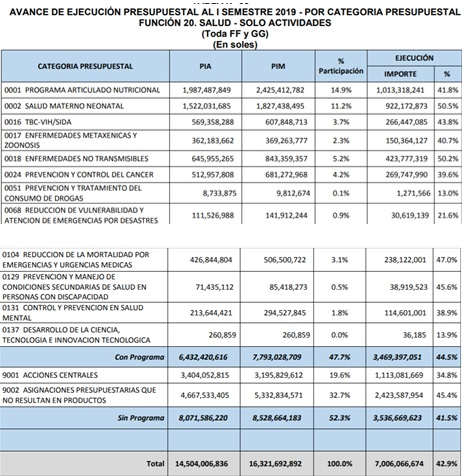

Planteamiento de la Solución
Definición del Problema:
- a. Identificación de los efectos
- Aumento de gastos familiares y revaluación del presupuesto familiar.
- Problemas médicos.
- Gastos nacionales fuera de presupuesto
- Problemas psicológicos
- Problemas en las relaciones interpersonales
- b.Medición de los efectos:
- Aumento de gastos familiares y revaluación del presupuesto familiar:
- Problemas médicos:
- Gastos nacionales fuera de presupuesto:
- Problemas psicológicos:
- Problemas en las relaciones intertpersonales:
- c. Comparación con estandares:
- d. Cuantificar
- Impacto económico:
- Gastos Anuales en Insulina
- Gastos Anuales en Medicina Oral
- Gastos Anuales en Examenes
- Impacto Psicosocial
- Impacto Tecnológico
- Daña directamente al entorno y al paciente, produce un aumento exponencial en los gastos para el diagnóstico y el tratamiento para la diabetes mellitus, además para los casos donde la enfermedad no se controla de manera apropiada el paciente tendrá que someterse a costosas operaciones.
- Daña al paciente directamente, la diabetes genera diferentes consecuencias en la salud las más comunes son el pie diabético (sin un buen control de la enfermedad conlleva a una amputación) , retinopatía diabética (ceguera), insuficiencia renal,entre otras. Además de esto el riesgo de desarrollar enfermedades mortales tales como infartos y accidentes cerebrovasculares aumenta bastante.
- Daña al estado, que las personas que cuentan con un seguro médico del estado desarrollen diabetes le produce al estado un gasto altísimo en cuanto a la recuperación del paciente, además se sabe que el presupuesto del estado para enfermedades no transmisibles (donde se encuentra la diabetes) no es suficiente, ya que se gasta S/. 19,669 (por paciente al año) y el presupuesto que se tiene es insuficiente para cubrir a estas personas.
- Daña al paciente y a las personas a su alrededor, el paciente desarrolla diferentes formas de expresión ;de sus expresiones más comunes son la sensación de falta de control sobre la enfermedad, los temores e inseguridades respecto a la salud y el cuerpo, la pérdida o disminución de motivaciones, la inquietud o "nerviosismo", la aprehensión, los trastornos del sueño y de los patrones nutricionales, la hostilidad, la labilidad emocional, las manifestaciones psicosomáticas (dermatológicas, gastrointestinales y cardiovasculares), las dificultades en los procesos de reconstrucción de la imagen corporal, de la autoestima, y en algunos procesos cognitivos (memoria, atención, concentración), el aislamiento social, así como la pérdida del sentido de la vida, entre otros.
- Daña al paciente y a su familia, La presencia de temores respecto a la salud propia, la familiar, las preocupaciones por convertirse en una carga para los seres queridos y para la sociedad, los sentimientos de tristeza y desesperanza asociados con la pérdida de la salud, las modificaciones a incluir en sus vidas, el sentido de sujeción a procesos de atención de salud, y los temores respecto a los propios desempeños, pueden integrarse, de forma particular, en cada individuo, y mermar la calidad de sus relaciones.
- Según la Federación Internacional de Diabetes (IDF por sus siglas en inglés - International Diabetes Federation), en el mundo existirían 387 millones de personas con diabetes, de los que 179 millones (46%) estarían no diagnosticados. La mayoría tiene entre 40 y 59 años. El 77% de las personas con diabetes viven en países con ingresos medianos y bajos. Para el 2035 se estima que en el mundo se sumarían 205 millones de nuevos diabéticos. En América habría alrededor de 64 millones de personas con diabetes: 25 millones en América Central y América del Sur, y 39 millones en América del Norte y El Caribe. Para el 2035 se estima que la prevalencia de diabetes en la región de América Central y América del Sur crecerá en 60%.
Estudios internacionales han sugerido que Perú es el país con menor prevalencia de diabetes en Sudamérica en población femenina: 8,1%, en comparación a 8,5% en Ecuador, 10,8% en Chile, 8,9% en Bolivia y 8,7% en Brasil, esto se debe a la diferencia de los hábitos alimenticios de Perú y los demás países latinoamericanos. Además, según la OMS, las mujeres son las más afectadas con diabetes en la mayoría de países de Latinoamérica con excepción de Venezuela, en el que los porcentajes de varones y mujeres son de 9.1% y 8.5%, respectivamente.
En el Perú, según la Organización Mundial de la Salud, existiría un 6.7% (IC 95%; 4.1% – 9%) de personas con 18 años a más que tienen azúcar elevada en sangre (≥126 mg/dl) o que toman medicación hipoglucemiante o tuvieron diagnóstico previo de diabetes mellitus.
En el 2018, por una división regional se encontró que el mayor porcentaje de personas con diabetes se encuentran en Lima Metropolitana (4,4%) y Resto Costa (4,0%), y menor porcentaje en la Sierra (2,1%) y Selva (3,3%).
Según PERUDIAB para las personas de 25 años a más del área urbana y suburbana, en el país existiría una prevalencia de diabetes mellitus de 7% (IC 95%; 5.3% - 8.7%) de los que el 4.2% (60%) refirieron que un médico o una enfermera les mencionó tener diabetes o utilizaban medicación para tratar la enfermedad (antidiabéticos orales o insulina). Según la Encuesta Demográfica y de Salud Familiar del año 2014, realizada en personas de 15 años a más, el 3,2% de las personas entrevistadas reportó haber sido diagnosticados por un médico de diabetes o azúcar alta en sangre; siendo esta prevalencia de 2,9% en hombres y 3,9% en mujeres. Además, encontró que el 70,3% de estos recibió o compro medicamentos con receta médica.
A pesar que la comparación con otros países de la región puede parecer favorable al Perú, la tendencia en el tiempo también debe ser tomada en consideración. En el periodo de 1980 al 2014 la prevalencia de diabetes en el Perú aumentó en más del 37% (cambio relativo). Si bien este estimado es menor que en otros países vecinos, este indica que la diabetes es un problema creciente. A pesar de la relevancia de estos hallazgos, su interpretación debe ser cuidadosa por la escasez de estudios locales a inicios del periodo de evaluación y por las técnicas de modelamiento empleadas. Por otro lado, desde 1975 hasta 2016 el índice de masa corporal promedio en Perú aumentó en 3,8 unidades (Kg/m2), mientras que la prevalencia de obesidad lo hizo en más del 158% (cambio relativo). El aumento en este indicador básico de nutrición (el índice de masa corporal) es consistente con el aumento de la diabetes. De la misma manera, a medida que el índice de masa corporal aumente en niños y adolescentes, se verán más casos de diabetes tipo 2 (aumentará la incidencia y prevalencia) y en personas más jóvenes.
En Latinoamérica puede observarse que la norma es que la prevalencia de diabetes afecta en mayor parte a la población femenina, hecho que se distancia de las estadísticas encontradas en países con diferentes contextos, por ejemplo, según el Centro Nacional de Prevención de Enfermedades Crónicas y Promoción de la Salud en Estados Unidos la prevalencia de diabetes es mayor en hombres (15.3%) que en mujeres (14.9%). Además, debido al centralismo que afecta al Perú, la mayor cantidad de afectados se encuentran en la capital, lo que se relaciona al aumento del mercado de productos alimenticios poco saludables, industria que se ha ido incrementando desde hace muchos años en nuestro país.
Además, el Perú tiene la taza de trabajo en mujeres más alta de Latinoamérica con un 69% según el Banco Mundial en un reporte realizado el 2017 y sabemos que en las zonas urbanas en la parte urbana del país se ubican 12 millones 515 mil mujeres, que representan el 78,8% del total nacional; y en el área rural 3 millones 372 mil, es decir el 21,2% las cuales implican un gran porcentaje de la economía del país, las mujeres además según la INEI son las personas con trabajos más sedentarios en el Perú como se puede observar a continuación: El 67,6% de las mujeres se desempeñan en Servicios y Comercio, el 20,9% en Agricultura, el 8,6% Manufactura, el 2,1% Transportes y Comunicaciones, el 0,3% Pesca y Minería; y el 0,5% en Construcción.
-
Según datos obtenidos por el informe de PERUDIAB 2015 además de información conseguida de bases de datos de farmacias nacionales y haciendo uso de los resultados del informe de población peruana actual realizado por el CPI (Compañía peruana de estudios de mercado y opinión pública):
| Gasto de Insulina en Mujeres de 25-39 años con diabetes mellitus tipo 2 en Perú | |||||||||
|---|---|---|---|---|---|---|---|---|---|
| Tipo de Insulina | Nombre comercial | Volumen (ml) | Unidades /ml | Unidades / dia | Costo | Costo/Unidad | Numero de unidades /año |
Numero de usuarios |
Total |
De acción rápida |
Humalog | 10 | 100 | 8.55 | S/. 141.60 | S/. 0.14 | 3120.75 | 191,196.84 | S/. 84,489,539.44 |
| Novorapid | 3 | 100 | 8.55 | S/. 54.10 | S/. 0.18 | 3120.75 | S/. 107,600,849.43 | ||
| Apidra | 3 | 100 | 8.55 | S/. 50.15 | S/. 0.17 | 3120.75 | S/. 99,744,595.17 | ||
| Regular | Humilina | 10 | 100 | 8.55 | S/. 75.00 | S/. 0.08 | 3120.75 | S/. 44,750,595.17 | |
| De acción Intermedia | NPH (Neutral Protamine Hagedorn) |
10 |
100 | 11.4 | S/. 55.00 | S/. 0.06 | 4161.00 | S/. 43,756,352.82 | |
| De acción lenta | Levemir | 3 | 100 | 8.55 | S/. 73.90 | S/. 0.25 | 3120.75 | S/. 146,981,566.97 | |
| Total | 19764.75 | S/. 527,323,719.21 | |||||||
| Gasto de Insulina en Mujeres de 40-55 años con diabetes mellitus tipo 2 en Perú | |||||||||
|---|---|---|---|---|---|---|---|---|---|
| Tipo de Insulina | Nombre comercial | Volumen (ml) | Unidades /ml | Unidades / dia | Costo | Costo/Unidad | Numero de unidades /año |
Numero de usuarios |
Total |
De acción rápida |
Humalog | 10 | 100 | 8.55 | S/. 141.60 | S/. 0.14 | 3120.75 | 250,925.94 | S/. 84,489,539.44 |
| Novorapid | 3 | 100 | 8.55 | S/. 54.10 | S/. 0.18 | 3120.75 | S/. 107,600,849.43 | ||
| Apidra | 3 | 100 | 8.55 | S/. 50.15 | S/. 0.17 | 3120.75 | S/. 99,744,595.17 | ||
| Regular | Humilina | 10 | 100 | 8.55 | S/. 75.00 | S/. 0.08 | 3120.75 | S/. 44,750,595.17 | |
| De acción Intermedia | NPH (Neutral Protamine Hagedorn) |
10 |
100 | 11.4 | S/. 55.00 | S/. 0.06 | 4161.00 | S/. 43,756,352.82 | |
| De acción lenta | Levemir | 3 | 100 | 8.55 | S/. 73.90 | S/. 0.25 | 3120.75 | S/. 146,981,566.97 | |
| Total | 19764.75 | , | S/. 692,057,469.12 | ||||||
| Gasto de Insulina en Mujeres de 56+ años con diabetes mellitus tipo 2 en Perú | |||||||||
|---|---|---|---|---|---|---|---|---|---|
| Tipo de Insulina | Nombre comercial | Volumen (ml) | Unidades /ml | Unidades / dia | Costo | Costo/Unidad | Numero de unidades /año |
Numero de usuarios |
Total |
De acción rápida |
Humalog | 10 | 100 | 8.55 | S/. 141.60 | S/. 0.14 | 3120.75 | 318,142.44 | S/. 84,489,539.44 |
| Novorapid | 3 | 100 | 8.55 | S/. 54.10 | S/. 0.18 | 3120.75 | S/. 107,600,849.43 | ||
| Apidra | 3 | 100 | 8.55 | S/. 50.15 | S/. 0.17 | 3120.75 | S/. 99,744,595.17 | ||
| Regular | Humilina | 10 | 100 | 8.55 | S/. 75.00 | S/. 0.08 | 3120.75 | S/. 44,750,595.17 | |
| De acción Intermedia | NPH (Neutral Protamine Hagedorn) |
10 |
100 | 11.4 | S/. 55.00 | S/. 0.06 | 4161.00 | S/. 43,756,352.82 | |
| De acción lenta | Levemir | 3 | 100 | 8.55 | S/. 73.90 | S/. 0.25 | 3120.75 | S/. 146,981,566.97 | |
| Total | 19764.75 | , | S/. 877,441,565.98 | ||||||
| Gastos en medicina oral en mujeres de 25-39 años con diabetes mellitus tipo 2 en el Perú | |||
|---|---|---|---|
| Medicina Oral | Precio Dosis | N° de Usuarios | Total |
| Metformina | S/. 0.15 | 191,200 | S/. 28,680 |
| Glimepirida | S/. 1.20 | S/. 229,440 | |
| Glibenclamida | S/. 0.08 | S/. 15,296 | |
| Total | S/. 1.43 | 191,200 | S/. 273,416 |
| Gastos en medicina oral en mujeres de 40-55 años con diabetes mellitus tipo 2 en el Perú | |||
|---|---|---|---|
| Medicina Oral | Precio Dosis | N° de Usuarios | Total |
| Metformina | S/. 0.15 | 250,900 | S/. 37,635 |
| Glimepirida | S/. 1.20 | S/. 301,080 | |
| Glibenclamida | S/. 0.08 | S/. 20,072 | |
| Total | S/. 1.43 | 250,900 | S/. 358,787 |
| Gastos en medicina oral en mujeres de 56+ años con diabetes mellitus tipo 2 en el Perú | |||
|---|---|---|---|
| Medicina Oral | Precio Dosis | N° de Usuarios | Total |
| Metformina | S/. 0.15 | 318,100 | S/. 47,715 |
| Glimepirida | S/. 1.20 | S/. 381,720 | |
| Glibenclamida | S/. 0.08 | S/. 25,448 | |
| Total | S/. 1.43 | 318,100 | S/. 454,883 |
| Gastos en examenes en mujeres de 25-39 años con diabetes mellitus tipo 2 en el Perú | |||
|---|---|---|---|
| Examenes/pruebas | Precio de examen/prueba | N° de Usuarios | Total |
| Glucosa basal | S/. 154.00 | 191,200 | S/. 29,444,800 |
| Resistencia a la insulina |
S/. 240.00 | S/. 45,888,000 | |
| Tolerancia a la glucosa |
S/. 138.00 | S/. 26,385,600 | |
| Visita al endocrinologo |
S/. 150.00 | S/. 28,680,000 | |
| HbA1c(Hemoglobina Glucosilada) |
S/. 68.00 | S/. 13,001,600 | |
| Hemograma | S/. 48.00 | S/. 9,177,600 | |
| Transamilasa TGO | S/. 72.00 | S/. 13,766,400 | |
| Transamilasa TGP | |||
| Total | S/. 870.00 | 191,200 | S/. 166,344,000 |
| Gastos en examnes en mujeres de 40-55 años con diabetes mellitus tipo 2 en el Perú | |||
|---|---|---|---|
| Examenes/pruebas | Precio de examen/prueba | N° de Usuarios | Total |
| Glucosa basal | S/. 154.00 | 250,900 | S/. 38,638,600 |
| Resistencia a la insulina |
S/. 240.00 | S/. 60,216,000 | |
| Tolerancia a la glucosa |
S/. 138.00 | S/. 34,624,200 | |
| Visita al endocrinologo |
S/. 150.00 | S/. 37,635,000 | |
| HbA1c(Hemoglobina Glucosilada) |
S/. 68.00 | S/. 17,061,200 | |
| Hemograma | S/. 48.00 | S/. 12,043,200 | |
| Transamilasa TGO | S/. 72.00 | S/. 18,064,800 | |
| Transamilasa TGP | |||
| Total | S/. 870.00 | 250,900 | S/. 218,283,000 |
| Gastos en examenes en mujeres de 56+ años con diabetes mellitus tipo 2 en el Perú | |||
|---|---|---|---|
| Examenes/pruebas | Precio de examen/prueba | N° de Usuarios | Total |
| Glucosa basal | S/. 154.00 | 318,100 | S/. 48,987,400 |
| Resistencia a la insulina |
S/. 240.00 | S/. 76,344,000 | |
| Tolerancia a la glucosa |
S/. 138.00 | S/. 43,897,800 | |
| Visita al endocrinologo |
S/. 150.00 | S/. 47,715,000 | |
| HbA1c(Hemoglobina Glucosilada) |
S/. 68.00 | S/. 21,630,800 | |
| Hemograma | S/. 48.00 | S/. 15,268,800 | |
| Transamilasa TGO | S/. 72.00 | S/. 22,903,200 | |
| Transamilasa TGP | |||
| Total | S/. 870.00 | 318,100 | S/. 276,747,000 |
- Según datos recogidos del informe presupuestal del MINSA del 2019, en el 1° semestre del año se inició con un Presupuesto Institucional de Apertura (PIA) de S/ 14 504 006 836 de soles, terminando el I Semestre con un Presupuesto Institucional Modificado (PIM) de S/ 16 321 692 892, de los cuales se ejecutaron S/ 7 006 066 674. Como se puede observar en la tabla siguiente, se dirije S/. 645 955 265 inicialmente a las enfermedades no transmisibles, mientras que al final de semestre aumentó a S/.843 359 357.

Sin embargo, el especialista del Ministerio de Salud, Jorge Hancco Saavedra afirma que el 73% de las personas con diabetes han sido diagnosticadas mientras que el 27% restante no lleva un control adecuado de la enfermedad. Además, de acuerdo con un estudio de Ispor, se calcula que un paciente diabético controlado le cuesta al Estado alrededor de S/1 392 al año (ó S/ 696 por semestre); mientras que el gasto en un paciente no controlado asciende a S/19 661 (ó S/ 9830,5 por semestre). Considerando que aproximadamente existen 2 millones de personas padecen de la enfermedad entonces:
2 000 000 x 73% = 1 460 000 personas con diabetes controlada
2 000 000 x 27% = 540 000 personas con diabetes no controlada
1 460 000 x S/ 696 = S/ 1 016 160 000: Gasto nacional en personas con diabetes controlada por semestre
540 000 x S/ 9830,5 = S/ 5 308 470 000: Gasto nacional en personas con diabetes no controlada por semestre
S/ 1 016 160 000 + S/ 5 308 470 000 = S/. 6 324 630 000 :Gasto Total aproximado del estado en personas con diabetes
Según estos cálculos, la cantidad gastada por el estado sólo en pacientes con diabetes en los primeros 6 meses del año es de S/. 6 324 630 000 mientras que el presupuesto inicial para tratar todas las enfermedades no transmisibles es de S/. 645 955 265. Esto significa que el gasto real del país en esta enfermedad es casi 10 veces más que todo el dinero destinado a las enfermedades no transmisibles, grupo que no solo contiene a la diabetes.Además se puede observar una pérdida en el trabajo del paciente ya que la diabetes deteriora el estado de salud del paciente, los órganos que más daña según la OMS son el corazón, los vasos sanguíneos, ojos, riñones y nervios lo cual genera una disminución en el tiempo laboral de una persona con diabetes y disminuye su oportunidad de conseguir empleos que requieren un gran esfuerzo físico.
- Debido al creciente número de afectados por la diabetes, nuevos avances tecnológicos han sido presentados con el único objetivo de ayudar a contrarrestar la enfermedad. Uno de los ejemplos son los sensores de monitorización continua de glucosa. Según el doctor Segundo Seclén, expresidente de la Sociedad Peruana de Endocrinología y docente de la Universidad Peruana Cayetano Heredia (UPCH), estos dispositivos son aparatos pequeños que se insertan bajo la piel y determinan los niveles de glucosa, para que el paciente sepa cómo va en su control con la insulina.
Carlos Guerrero, endocrinólogo de la Clínica Internacional, menciona que su institución cuenta con los sensores de monitorización de glucosa para pacientes con diabetes tipo 1 o diabetes juvenil, que también se usa en pacientes con diabetes tipo 2 o diabetes del adulto.
Otra de las herramientas que se viene utilizando mucho son las bombas de infusión subcutánea continua de insulina, también llamado páncreas artificial, cuya función es introducir niveles de insulina de acuerdo a los niveles de glucosa mediante un set de infusión. Sin embargo, este es un equipo que aún falta aterrizar en nuestro país.
El doctor Seclén también menciona la insulina inhalada. Este equipo se utiliza especialmente para pacientes con asma. Ha sido perfeccionado para mejorar el tratamiento con los pacientes y el proceso de aplicación es leve y eficaz.
- PROBLEMA:EL AUMENTO DE LA PREVALENCIA DE DIABETES POR EL ESTILO DE VIDA SEDENTARIO EN LAS MUJERES DE 25 A MÁS AÑOS.
- POBLACIÓN:Mujeres de 25 a más años
- RESULTADOS:Se espera que se reduzca la prevalencia de diabetes en mujeres sedentarias y que se aumente la actividad física que estas mismas realizan para de esa manera mantenerse saludable y aumentar su productividad en aspectos generales de su vida, además se busca inculcar hábitos saludables que ayuden a la prevención de la diabetes.
Causas del Problema:
- Obesidad y sobrepeso
- Falta de actividad física
- Trabajos que no exigen actividad física (sedentarios)
- Sindrome Metabólico
- Genética
- Dieta no balanceada
- Depresión
Estado del Arte y Analisis de Patentes
- a. Estado del Arte:
- b. Matriz de Analisis de Patentes
- Patente 1:
- Patente 2:
- Patente 3:
- Patente 4:
- Patente 5:
- Patente 6:
- Patente 7:
- c. Estrategias e intervenciones eficaces que proponen en la modificación de hábitos y la mejora de la adherencia tanto cognitivas (educación y mejora de la comunicación) como conductuales (comportamiento y motivación):
- Estimulo Activador: En esta etapa se debe buscar factores que impulsan a que la persona empiece, en este caso, a realizar actividad física. Por ello, la actividad física será realizada en conjunto con diversos usuarios con los cuales se podrán generar rutinas en conjunto para hacer el ejercicio mucho más ameno y se adecuará al ritmo que necesite el usuario acorde a ejecicios que el guste hacer. Para garantizar la privacidad de sus resultados se buscará que estos lleguen de manera de informe detallado informando el progreso del usuario al correo electrónico que registró al inicio de la aplicación. Acción: Si bien esta solución puede ser sumamente eficaz, necesitará el apoyo de diferentes actores externos tanto como la publicidad y las comunidades deportivas. Si esto se logra, sería más efectivo el estímulo activador ya que las rutinas de ejercicio podrían ser compartidas entre los usuarios señalando la cantidad promedio de % de grasa atacado con lo que se podrían brindar diversas alternativas y ritmos acorde a la necesidad de cada usuario.
- Recompensa Elaborando un sistema de recompensa en modalidad de misiones, el usuario podrá tener una mayor motivación dado que estas serán por grados de dificultad. Desde realizar alguna actividad física durante 30 minutos hasta una racha de 15 días trotando 45 minutos, este sistema busca que el usuario pueda cambiar su forma de ejercitarse hasta después del horario laboral. Al completar cada misión se podrán optar por diversos vales hacia algún establecimiento saludable, con los cuales se realizar una negociación previa para obtener las recompensas a cambio de publicidad dentro de la aplicación para así poder sustentar los gastos. Por otro lado, estos misiones serán de carácter público lo cual estimulará tanto la competencia entre trabajadores, como el propio sentimiento de orgullo propio por su trabajo realizado.
- Actualmente ya se encuentran muchas formas de diferentes enfoques de cómo ayudar en la prevención y en el mismo momento de la enfermedad. En este caso se enfocará a la tecnología destinada a la promoción de ejercicio e importantes aportes recientes.
En el ámbito del tratamiento padeciendo ya esta dolencia, se encuentra un dispositivo de monitoreo y administración de glucosa e insulina respectivamente. Esta propuesta ha sido planteada por diferentes compañías y corporaciones médicas, sin embargo, el Dexcom G6 fue el primero en ser aprobado por la FDA (2018). Este producto específicamente es un hardware que está posicionado en la zona abdominal y que hace suministra una cantidad de glucosa en función de los datos proporcionados por el sensor. Lo que se puede rescatar de este producto es la innovación de automatizar el proceso tratamiento de diabetes y hacerlo más rápido y efectivo para el cliente/paciente.
En este mismo ámbito se pueden encontrar métodos no invasivos para el paciente como el uso de estimaciones a partir de la dieta y actividad física de la persona. Este método lo que hace es que las personas pueden saber una aproximación de cuánta cantidad de insulina deben inyectarse a raíz de lo anteriormente mencionado. Sin embargo, este método puede resultar bastante ambiguo y su punto más importante es el del enfoque de “estimar”.
Con respecto a los sistemas médicos virtuales, se ha encontrado una patente que busca realizar una investigación clínica del paciente, y que funciona con el almacenamiento de los datos médicos del paciente en categorías y luego con el uso de un software se selecciona la información necesaria para la investigación clínica. Se puede rescatar de este sistema el uso de un software para la el análisis de los datos y el uso de un motor de aprendizaje del tipo inteligencia artificial.
Con respecto a los métodos para la creación de estos sistemas se han encontrado dos patentes. La primera de ellas consiste en un proceso de recopilación de información médica, y luego los datos obtenidos serán comparados y clasificados en base a estándares internacionales de medicina. La segunda patente que gestiona los datos médicos del paciente y luego establece posibles diagnósticos. Además cuenta con un monitoreo en tiempo real que permite predecir enfermedades en base a las tendencias de la población que rodea al paciente. Lo que se busca rescatar de estas patentes es el uso de procesos que clasifiquen la información en base a una comparación con estándares y, además, el uso de un proceso de monitoreo en tiempo real.
Además se encontró con el método LARS, un sistema matemático el cual ayudaría a generar una series de variables para llegar a conclusión, en este caso, de que tan propenso es una persona a tener una cuadro de diabetes. Este sistema matemático funciona de manera que, tras ingresar una serie de variables que serán indicadores de salud del paciente asociados a factores de riesgos ante la diabetes generando una conclusión de que si es que la persona puede llegar a tener esta enfermedad.
Por otro lado, se encontraron patentes de métodos para la promoción de actividad física mediante el uso de apps. Hay numerosos métodos para la promoción de ejercicio, sin embargo, una de las patentes que se diferencian del resto es una sistema que a partir de la música, estimula al usuario a realizar sus actividades físicas. Esta patente lo que busca es coordinar los “tempos” o “ritmos” del usuario en función a una canción que sonará de fondo y a través de esto, que el usuario busca una satisfacción propia al momento de realizar estos ejercicios.
Otra interesante patente encontrada es una que te recomienda actividades acorde a tu capacidad para realizar trabajo físico. Esta puede resultar bastante útil al momento de informarse sobre qué actividades físicas puede realizar sin que resulte con algún tipo de dolor de gravedad. Esto ayudaría a aumentar la efectividad de los ejercicios realizados y, que además, la integridad del usuario no estaría en peligro.
- A continuación se mostraran las patentes mencionadas anteriormente
| Patente 1 | Patente 2 | Patente 3 | Patente 4 | Patente 5 | Patente 6 | Patente 7 | |
|---|---|---|---|---|---|---|---|
| Nombre de la Patente |
Dispositivo integrado de envío de insulina a través de un sensor analítico continuo | Bomba de insulina simplificada para diabetes tipo II. | Sistema de servicio de investigación científica clínica tipo inteligencia artificial. | Método para proporcionar información médica para la aplicación de salud inteligente. | Least Angle Regression a.k.a (LARS) |
EXERCISE PROMOTING DEVICE | Exercise management system and method based on exercise ability analysis and hydraulic exercise equipment device and exercise analysis device thereof. |
| Resumen | Es un sistema compuesto por un hardware y un software el cual se encuentra ubicado en la zona abdominal que monitorea la glucosa en sangre y de acuerdo a los niveles que se registre, envía una dosis de insulina a la sangre. | Es un dispositivo que a partir de la dieta y la actividad física de cada paciente | Es un sistema de servicio de investigación clínica, en el cual la información se almacena por categorías, luego el software selecciona la información necesaria para la investigación clínica. | Es un método que funciona con un proceso de recopilación y clasificación de información en base a un estándar internacional de información médica. | Es una herramienta estadística la cual a partir de variables ya fijadas por el usuario, se logra tener una serie de estas las cuales a medida que se introducen valores se “genera” otra variable la hace lo mencionado en lo anterior hasta que se llegue a un límite preestablecido | Es un software que incorpora el ritmo/tempo de la música acorde con la actividad física que el usuario está experimentando para así el usuario tenga un estímulo. | Un sistema de análisis de data del usuario que genera actividades físicas acordes a este análisis para que este esté informado y este en su capacidad de realizar su trabajo. |
| Reivindicación | El uso de unsistema de monitoreo continuo para el análisis y, en consecuencia,el envío de insulina a la sangre. | El enfoque de la estimación. | El uso de un software de análisis integral de datos. El uso de un motor de aprendizaje del tipo artificial. |
Uso de un proceso de recopilación de información y clasificación de la misma en base a estándares. | Uso de un método de una selección de procesos (a medida que se avanza con las variables planteadas es que se puede llegar a una conclusión con respecto a lo que uno quiere plantear). | El uso de música promover la actividad física del paciente. | Promover actividades físicas que sean acorde a la capacidad física del paciente |
| Ventajas | Mayor precisión a la hora de administrar insulina Mayor rapidez y eficacia para el diagnóstico y envío de glucosa e insulina respectivamente. Sistema automatizado. |
Mayor rapidez a la hora de administrar la insulina. Pacientes no tienen que pincharse cada vez que deseen medir su nivel de glucosa |
Puede evitar el desequilibrio entre la oferta de médicos y la demanda de pacientes | Convierte los datos en información interoperable entre los estándares internacionales de información médica. | Sistema que se puede regular a partir de los datos que se requieran o parámetros con los que se cuenten. | Estímulo que, no se encuentra limitado a ningún tipo de persona. | Previene las lesiones por excesivo ejercicio del usuario. Informa sobre las actividades físicas. |
- Según una investigación realizada por el Departamento de Sistemas de Información de la Universidad Nacional de Tenaga, Malasia existen 7 factores claves por los que una aplicación de cuidado médico personal resulta efectivo. Entre ellos destacan la facilidad de uso, influencia social, eficacia personal para lograr diversos objetivos y la privacidad con la que se almacena la información.
Teniendo en cuenta estos factores, la primera estrategia que usaremos para poder modificar el comportamiento del usuario sería mediante consejos o frases en cada recordatorio (para realizar actividad física, lo cual también lo motivaría) que afecten a la psicología de la persona creando un pequeño sentimiento de superación que impulsa de esta manera las ganas de realizar actividades físicas por un tiempo, además la información brindada seria clara, precisa y concisa para no “aburrir” al paciente haciendo una aplicación amigable en ese aspecto y con una implementación de una IA podrías mejorar la comunicación que mantendrá la aplicación con el usuario de esta manera evitamos la falta de adherencia a la aplicación mientras a su vez logramos que la eficacia personal hacia los objetivos del usuario se desarrollen al ejercitarse continuamente. Además la banda tendría diversas facilidades para la personalización como la inclusión de nuevos colores y diseños con lo cual el usuario se puede sentir cómodo y no sacrificar la estética del producto. Lo que se busca con la solución planteada es fomentar un hábito de estilo de vida saludable en ambientes laborales, y de esta manera reducir el sedentarismo presente en nuestro público objetivo. Para ello usaremos el siguiente proceso para la formación psicológica de los hábitos.
Propuesta de Valor
Matriz Morfologica
- Bocetos de la Solución
- Idea 1: The Fabulous App:b> Es una aplicación que mediante recordatorios y mensajes busca generar hábitos saludables en los usuarios según la conveniencia de estos su algoritmo viéndolo de manera general te deja elegir que habito saludable deseas realizar y desde ese momento te monitorea para ayudarte a lograr tu objetivo.
- Idea 2: InBodyBand System:Banda que utiliza dos electrodos de dedo en la parte superior de la banda y electrodos de muñeca en la parte inferior de la banda para enviar una pequeña corriente eléctrica a través de su cuerpo. Cuanto más rápido se mueva la corriente a través de su sistema, menor será su porcentaje de grasa corporal total. Esto se debe a que la masa grasa ralentiza la corriente más que la masa libre de grasa (músculo, hueso y agua), además se puede medir el pulso cardíaco, los pasos recorridos, los datos son enviados a una aplicación la cual muestra estadística del desarrollo del usuario.
- Idea 3: Realizar un programa en empresas privadas en el que se le recompense a los empleados más productivos con un periodo de una hora para realizar actividad física y así eliminar el estilo de vida sedentario, aspecto que mejoraría el estado de salud del empleado para mantener su calidad laboral. MATRIZ MORFOLOGICA:
- Sintezis de la Matriz
| Componentes/Ideas | The Fabulous App https://www.thefabulous.co/ |
InBody Band https://inbodyusa.com/ |
Idea 3 |
|---|---|---|---|
| Sistema de Monitoreo | No monitorea | % de grasa corporal, pulso, cantidad de pasos | Horas de actividad física |
| Tipo de Información | Información resumida, clara y llamativa | Estadisticas y Cuadros | Informes para la empresa |
| Forma de obtención de datos | Datos dados por el usuario | Mediante 2 electrodos en una banda para la muñeca y datos brindados por el usuario | Mediante los sensores del teléfono y los datos conocidos del usuario |
| Aplicación Movil | Brinda información clara y ayuda a cambiar los hábitos de las personas por otros más saludables. | Brinda las estadísticas del progreso del usuario y datos diarios, además se pueden ingresar objetivos diarios. | Ayuda al usuario y a la empresa donde trabaja a controlar la información |
| Brindar Recomendaciones | Brinda una guia de como generar hábitos saludables a modo de tutorial | No brinda recomendaciones | No brinda recomendaciones |
| Motivación para su uso | Motiva al usuario mediante frases de superación. | No motiva al usuario | Motiva al usuario con recompensas por realizar actividades físicas |
- La solución consta de un aplicativo que mediante datos de porcentaje de grasa corporal y pulso, los cuales son recopilados mediante una banda y un cálculo realizado en el aplicativo después de colocar los datos básicos del usuario (edad altura y peso), determina una rutina de ejercicios personalizada y la cantidad de grasa corporal que debería mantener el usuario, la rutina personalizada sería con el fin de adecuarse a la condición actual del usuario y evitar el riesgo a lesionarse por una técnica inadecuada. Además la aplicación sugerirá al usuario que actividades físicas casuales puede realizar. Finalmente la aplicación brindará información de que tan alta será la prevalencia de diabetes en el usuario y será capaz de mediante recordatorio y mensajes motivacionales mantener el interés en el uso de la app.
Verificaciones
- Verificación 1:
- Armando Flórez Mendoza - Ginecólogo, Hospital Nacional Edgardo Rebagliati Martins
- Usos:Propuesta innovadora, especialmente debido al contexto de mediocridad que rodea a la mayoría de trabajadores peruanos. Será una propuesta efectiva para quienes se comprometan con la meta planteada. El incentivo planteado será necesario para motivar a los participantes.
- Indicaciones:Pre test sobre nutrición con una nutricionista. Pesaje semanal
- Advertencias:Dejar el tabaco y alcohol.
- Componentes principales y composición:Enfocarse en la importancia de los aspectos que se están tomando en cuenta y su impacto en la salud del individuo.
- Precauciones:Asegurarse que las rutinas recomendadas sean adecuadas al físico de la persona para evitar un caso de sobreesfuerzo
- ContraindicacionesPoco compromiso por parte de los usuarios.
- Verificación 2:
- Tania Troncos Merino - Anestesióloga, Hospital Guillermo Almenara Irigoyen
- Usos:Me parece muy interesante, sobre todo la compensación horaria para dedicarse a su salud, que se le otorga al personal más responsable con su trabajo.
- Indicaciones: Me parece efectiva porque se cambiaría el sedentarismo por actividad y además esta medida influenciará en evitar o disminuir el riesgo de síndrome metabólico.
- Advertencias:Mi recomendación sería que todo el personal en estudio tenga como variable de inclusión una dieta saludable, para lograr mejores resultados.
- Componentes principales y composición:Evaluar los aspectos principales del síndrome metabólico
- Precauciones:Si no se está controlando la dieta de la mujer entonces será difícil que las personas sigan las rutinas planteadas.
- ContraindicacionesProblemas médicos previos al inicio del periodo de uso deben tomarse en cuenta al determinar el nivel ideal de los aspectos que buscan medir.
- Verificación 3:
- Patricia Pozo Morales - Endocrinóloga, Hospital Nacional Daniel Alcides Carrión
- Usos:Es una idea muy interesante porque propone un cambio de vida saludable
- Indicaciones:Me parece que se debería tener en cuenta un equilibrio entre los aspectos psicológico mental nutricional agregado al programa de actividad física que proponen para lograr una mayor efectividad. Adicionalmente, usar fotos como una forma de mantener el interés de la persona así como aumentar su motivación al ver los cambios sería más efectivo que solo anunciar un cambio en sus resultados con números.
- Advertencias:No desarrollar síndrome metabólico, el tema es muy amplio, muchas variables (hipertensión, diabetes, dislipidemia, obesidad, sobrepeso, …) que se centren en sobrepeso y obesidad.
- Componentes principales y composición:Tanto la banda como la aplicación deben ser atractivas para su grupo objetivo asique debe haber un enfoque en la mentalidad que rodea el hecho de hacer uso del servicio
- Precauciones:El impacto de la aplicación debe ser dirigido a temas más personales para incitar un cambio en los hábitos de las mujeres.
- ContraindicacionesLa motivación inicial no será suficiente para mantener la aplicación en uso, así que busquen la forma de demostrar la efectividad de la aplicación.
Conclusiones
- Gracias a la recopilación de datos actualizados se encontró que el presupuesto actual no es adecuado para tratar ni una décima parte de los gastos necesarios para controlar la diabetes en el Perú. Si bien el país se encuentra muy lejos de poder cubrir dichos gastos, es también importante buscar solucionar el problema de raíz, atacando las causas controlables de la diabetes, una dieta saludable y actividad física suficiente.
- Se observa que gracias a los datos obtenidos, el principal problema existente es la prevención de la diabetes, pero en caso ésta no sea efectiva se debería optar por un sistema que permita al paciente afrontar de manera correcta la enfermedad para que de esta manera no empeore su condición de salud y pueda continuar con un estilo de vida parecido al que manejaba desde un principio y de esta manera bajar los altos costos que significa una diabetes no controlada.
- Debido a las recomendaciones recogidas a través de las validaciones hechas por los médicos entrevistados, se determinó que sería más directo medir solo el Índice de Masa Corporal (IMC) en vez de la idea inicial de realizar una medición de los otros aspectos del síndrome metabólico y partir de esta variable para diferenciar el estado en el que se encuentran los empleados involucrados, dato necesario para fijar la rutina de ejercicios personalizada.
- Si bien actualmente hay métodos tanto para prevención del mismo problema como lo son un par de patentes anteriormente mencionadas, como dispositivos para el tratamiento mismo que agilizan el proceso tradicional de aplicación de pequeñas dosis de insulina, estas opciones pueden resultar inaccesibles para un grupo de personas y no confiables para otro grupo; por lo que, a día de hoy, no hay soluciones totales ante este complejo problema.
- Finalmente, es esencial hacer hincapié en la responsabilidad por parte de las personas y empresas respecto a su rol de prevención respecto a la diabetes. Gracias al sistema de recompensas brindado por el aplicativo móvil hacia los empleados, las empresas podrán acceder a información en tiempo real acerca del estado de salud de los trabajadores con el fin de que estos puedan mantenerse en un óptimo estado de salud y a su vez mejorar su productividad sin perjudicar las metas trazadas por las compañías.
Recomendaciones
- Hacia las personas en general: Si bien en la mayoría de casos existe el caso en que la falta de tiempo juega en contra de la salud de cada persona, es esencial destinar un espacio de tiempo para ejercitarse mínimo 30 minutos al dia y realizarse los respectivos controles preventivos. Por otro lado, también es importante que cada persona conozca acerca del historial diabético presente en su familia debido a que la prevención es clave para evitar una proliferación de pacientes con diabetes que a corto y largo plazo afectará de manera psicologica y economica tanto al individuo como a los familiares.
- Hacia el sector empresarial (público y privado): Ante los efectos de la globalización y el consumismo, cada vez es más frecuente que la productividad de las empresas obliguen a los empleados a llevar un estilo de vida sedentario con el fin de cumplir metas empresariales. Sin embargo, las empresas deberían facilitar un espacio de tiempo destinado para que su personal se ejercite. Para lograrlo, sería recomendable establecer convenios entre empresas junto con establecimientos médicos para mantener en buen estado de salud a su personal reduciendo los costos y creando un mejor clima laboral. Gracias a esto se podría prevenir problemas médicos como el sobrepeso, obesidad, diabetes o hipertensión arterial.